At a glance
This dashboard shows the workforce of “Sample Co.”, an industrial company of about people, on a single page: the three workforce groups (direct employees, client staff and contractor staff) side by side, the HR department's ongoing projects, and the “People Results” indicators from the organizational excellence model.
The dashboard is designed to answer these questions:
- How many people work here, and what is each workforce group's share? Is our reliance on contractor staff growing?
- Which department has the highest turnover, and why do people leave?
- Where is the training plan, especially safety training, falling behind? Where and in which months is absence high?
- Are the HR projects on schedule?
- What is our score on the “People Results” criterion of the excellence model, and which indicators are weakest?
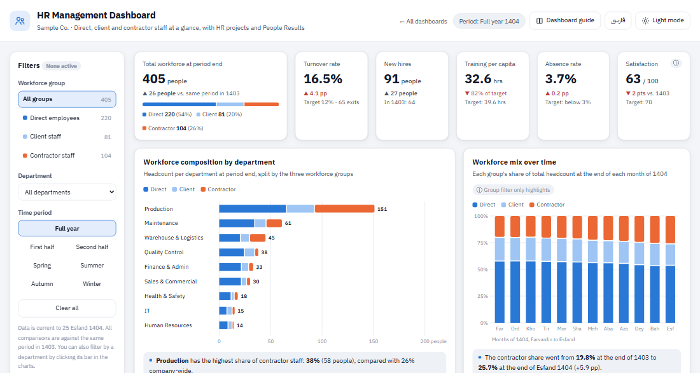
Quick start
- Read the cards first. The six cards at the top give you the big picture. Green means better than last year or the target; red means worse. For example, this year's turnover rate is , against last year.
- Go to “Key findings”. The dashboard writes up the most important points in plain language, which tells you which chart deserves a closer look.
- Drill down with the filters. Change the workforce group, department or period in the filter panel. Clicking a department's bar in any chart also filters by that department. “Clear all” takes you back to the starting view.
Filters
On desktop the filter panel sits on the left of the page; on a phone it moves to the top (open it with the “Show” button). There are three filters:
- Workforce group: all groups, direct employees, client staff or contractor staff. The number next to each option is that group's headcount at the end of the period.
- Department: one of the company's nine departments. In charts that compare departments, the selected one stays highlighted and the rest are faded, so the comparison isn't lost.
- Time period: the full year, the first or second half, or one of the four seasons of 1404. Every comparison is made against the same period in 1403.
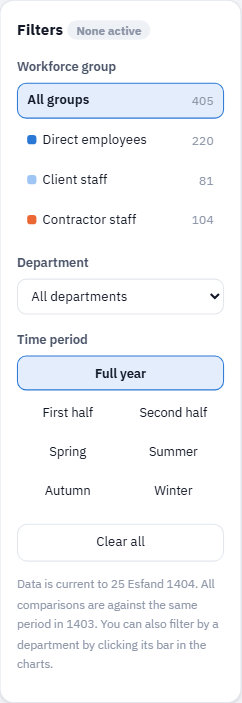
The page URL updates with the filters, so you can share a filtered view with a colleague. See the full picture of which filter affects what in the filter effects table.
View in dashboard →KPI cards
The six cards at the top show the period's most important figures. Under each figure is a comparison with the same period in 1403 or with the target. The ▲ or ▼ arrow shows the direction of change and the color shows whether it is good or bad; for example, a rising absence rate is shown with a red ▲.
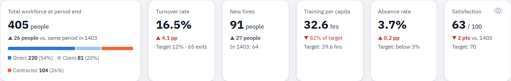
How to read it
- Total workforce: headcount at the end of the period, with a bar showing the share of the three groups.
- Turnover rate: exits divided by average headcount. For periods shorter than a year, the annualized figure is shown so it can be compared with the 12% target.
- New hires: hires in the period compared with last year.
- Training per capita: training hours per person, against a target pro-rated to the length of the period.
- Absence rate: the share of working days lost to unplanned absence.
- Satisfaction: average score from the annual Azar survey (out of 100).
Workforce composition by department
Each department gets a horizontal bar whose length is its headcount at the end of the period. Each bar has three segments: blue for direct employees, light blue for client staff and orange for contractor staff. Departments are sorted from largest to smallest.
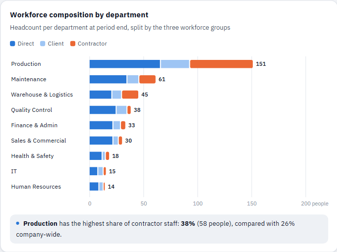
How to read it
- The number at the end of each bar is the department's total headcount. Hover over a bar to see the count and percentage for each group.
- Clicking a department's bar filters the whole dashboard to that department; clicking it again removes the filter.
- If you select a workforce group filter, only that group's segment is drawn.
Workforce mix over time
Each column is one month of 1404, and its full height is 100% of that month's headcount. Months run left to right: Farvardin on the left and Esfand on the right. The figure on the orange segment of the first and last columns is the contractor share.
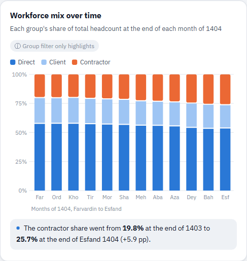
How to read it
- If the orange segment grows from left to right, the contractor share is increasing.
- This chart shows the group shares themselves, so the “Workforce group” filter only highlights the selected group. Months outside the selected period are faded.
Headcount, hires and exits
This chart has two parts. In the top part, the blue line is headcount at the end of each month of 1404 and the dashed gray line is the same figure for 1403. In the bottom part, the green column pointing up is the number of hires and the red column pointing down is the number of exits each month. The two parts have separate axes so the small hire and exit numbers aren't lost beneath the much larger headcount.
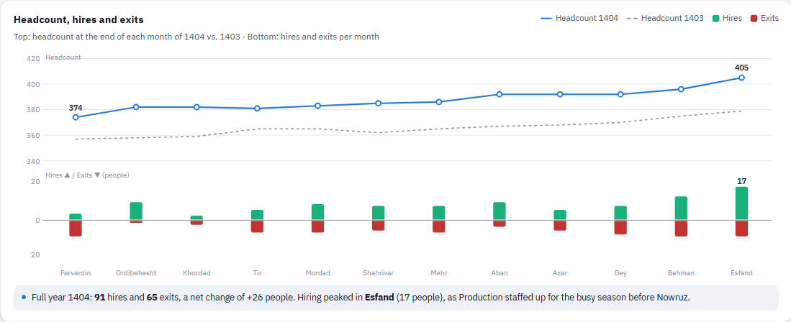
How to read it
- When a month's green column is taller than its red one, headcount grew that month.
- When you choose a season or half-year in the period filter, the months in that period are marked with a light blue background.
- Hover over any month to see all of its figures at once.
Turnover and reasons for leaving
The left side of this card shows each department's annualized turnover rate. The vertical dashed line is the 12% target, and the short dark mark on each bar is that department's 1403 rate. The bar color shows its status: red means more than 1.5× the target, orange means above target and blue means within target. The right side lists the reasons for this period's exits, from most to least common.
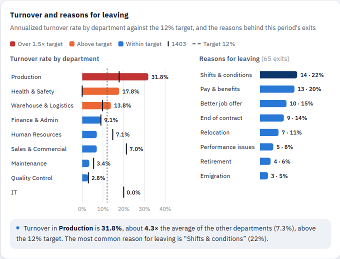
Key findings
This card pulls four or five important points from the filtered data and writes them up in plain language. When you change the filters, the findings are recalculated. The color of the icon next to each finding shows its importance: red for a serious problem, orange for a warning and blue for a point worth noting.
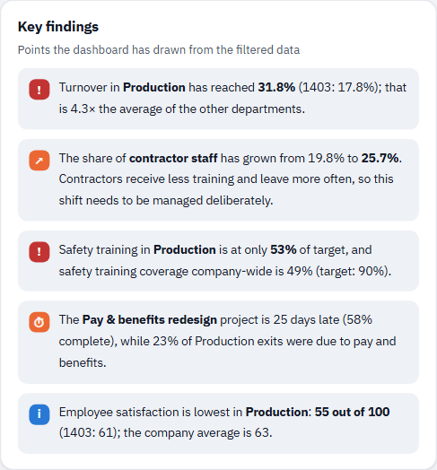
Training vs. target
For each department, the colored bar is training hours per employee in the period and the short dark mark is that department's target. The number beside the bar shows the actual hours per employee and the percentage of the target achieved. Departments are sorted from lowest to highest achievement so the ones lagging behind appear at the top. Use the toggle at the top of the card to switch between “All training” and “Safety training only”.
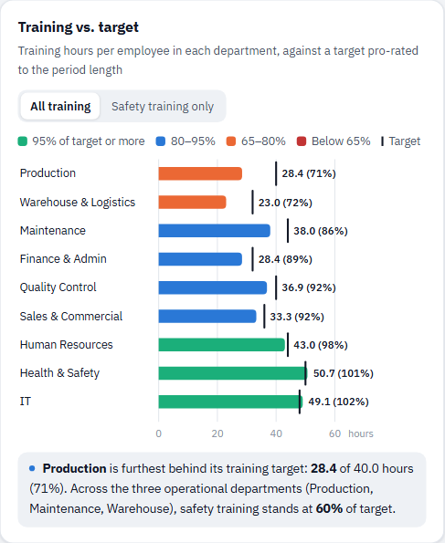
Absence heatmap
Each cell in this table is one department's absence rate in one month: the share of working days lost to unplanned absence. The darker the cell, the higher the absence. The last column is the period average and the last row is the company-wide average for each month. On a phone, you can swipe the table left and right.
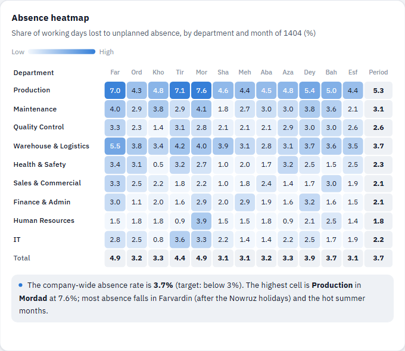
People Results in the organizational excellence model
In organizational excellence models (such as EFQM), the “People Results” criterion is measured with two kinds of indicator: perception indicators, which capture employees' own views through a survey, and performance indicators, which come from the organization's own data. This section puts eight indicators side by side.
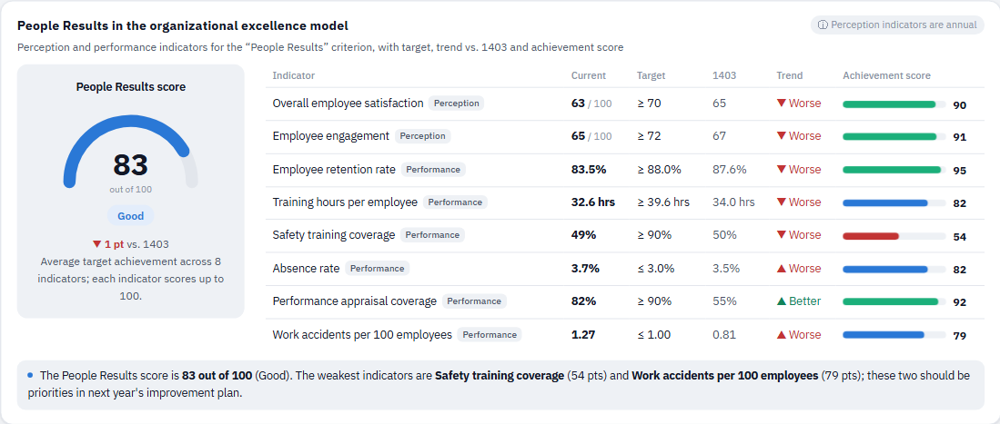
How to read it
- For each indicator you see the current value, the target, the 1403 value and the trend (▲ better or ▼ worse). For indicators such as absence and accidents, lower is better, and the trend is colored with the same logic.
- Each indicator's achievement score is the percentage of its target reached, capped at 100. The overall People Results score is the average of these eight scores: 90 or more is “Excellent”, 75–90 “Good”, 60–75 “Needs improvement” and below 60 “Weak”.
- Perception indicators come from the annual Azar survey and do not change with the period filter.
Ongoing HR projects
Each row is one project, with its owner, start and end dates, and a progress bar. The length of the colored bar is actual progress, and the dark vertical mark on the bar is where the project should be according to plan by the report date (25 Esfand 1404).
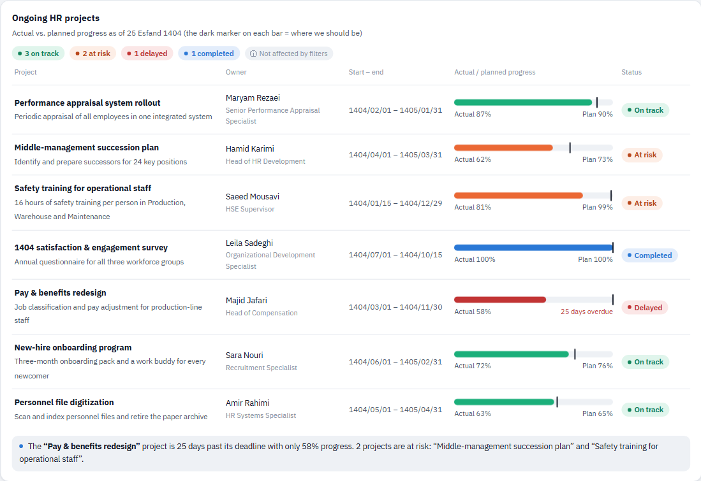
How statuses are assigned
- On track: actual progress is at most 8 percentage points behind plan.
- At risk: between 8 and 20 percentage points behind plan.
- Delayed: more than 20 percentage points behind, or the deadline has passed and the project isn't finished.
- Completed: 100% progress.
Projects are defined company-wide, so the filters have no effect on this section.
View in dashboard →Employee directory
This table lists everyone who was with the company for at least one day during the selected period, including those who left during it. The “Training hrs (period)” column has a small bar showing how close each person is to their training target.
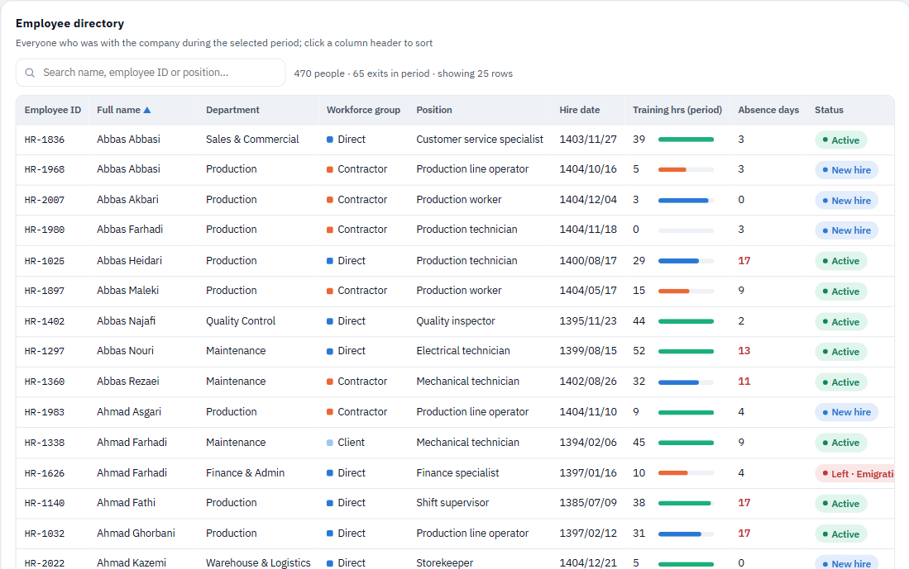
How to use it
- Sorting: click any column header; click again to reverse the order.
- Search: type part of a name, employee ID, position or department.
- Status: “Active”, “New hire” (hired in the last three months of the period) or “Left”, together with the reason.
- Absences of 10 days or more are highlighted in red. The first 25 rows are shown, and the button below the table loads more.
Filter effects
This table shows which sections each filter affects. ✓ means the figures are recalculated, Highlight means all items stay visible but the selected one is emphasized, and — means the filter has no effect.
| Section | Workforce group | Department | Time period |
|---|---|---|---|
| KPI cards | ✓ | ✓ | ✓ (except satisfaction) |
| Workforce composition | ✓ | Highlight | ✓ |
| Workforce mix over time | Highlight | ✓ | Highlight |
| Headcount, hires and exits | ✓ | ✓ | Highlight |
| Turnover and reasons | ✓ | Highlight | ✓ |
| Key findings | ✓ | ✓ | ✓ |
| Training vs. target | ✓ | Highlight | ✓ |
| Absence heatmap | ✓ | Highlight | Highlight |
| People Results (excellence model) | ✓ | ✓ | ✓ (except annual indicators) |
| HR projects | — | — | — |
| Employee directory | ✓ | ✓ | ✓ |
Frequently asked questions
What is the difference between “client staff” and “contractor staff”?
Client staff are people whose contracts are with the parent company or the project client but who work at Sample Co. Contractor staff are supplied through contracting firms. The dashboard keeps these three groups separate because their cost, retention and training needs differ.
Why is the quarterly turnover rate so different from the full-year figure?
For seasons and half-years, the annualized rate is shown so it can be compared with the annual 12% target. In a season with only a few exits, this figure can swing considerably, so look at the number of exits alongside it.
Why doesn't employee satisfaction change when I change the period?
The satisfaction and engagement survey runs once a year (in Azar). That is why this figure, and the two perception indicators in the excellence model, only change with the workforce group and department filters.
Is the People Results score the same as the official excellence assessment score?
No. This score is an internal monitoring indicator: the average target achievement across eight indicators. In a formal assessment, assessors also evaluate trends, target setting and comparisons with other organizations, but these same indicators form the basis of the evidence for that criterion.
Where does the data come from, and how often is it updated?
The data is read from the time and attendance system, payroll, the training system and the contractor staff lists, and can be refreshed daily or monthly.
Can I send a filtered view to someone?
Yes. The filters are stored in the page URL; copy the URL and send it, and the recipient will see the same view.
Glossary
- Turnover rate
- The number of people who left the company during the period, divided by the average headcount for that period. For periods shorter than a year, it is scaled to an annual basis.
- Annualized
- A figure calculated for a short period and scaled up to 12 months so it can be compared with an annual target.
- Retention rate
- One hundred minus the annualized turnover rate.
- Training hours per employee
- Total training hours delivered divided by average headcount. Each department's target is set annually and reduced proportionally for shorter periods.
- Safety training coverage
- The percentage of current employees who have completed at least three-quarters of their department's required safety training hours in the past 12 months.
- Absence rate
- The percentage of working days lost to unplanned absence (not scheduled leave).
- Perception and performance indicators
- In the excellence model, a perception indicator measures employees' views through a survey, while a performance indicator is derived from the organization's internal data.
- Planned progress
- The share of a project that should have been completed by the report date if work had progressed evenly between the start and end dates.